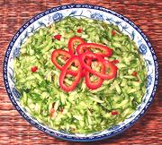

|
Thai Cucumber Salad #1Thailand | ||||
| Serves: Effort: Sched: DoAhead: |
6 salad * 20 min hrs Note-5 |
a quick, easy, cooling salad, perfect to accompany spicy dishes. It can be used with just about any cuisine. | |||
|
1-1/2 1 1 2 3 1/2 1/3 |
# cl t T t t |
Cucumbers (1) Red Chili (2) Garlic Fish Sauce (3) Lime Juice dried shrimp (4) Salt |
Make: - (20 min)
|